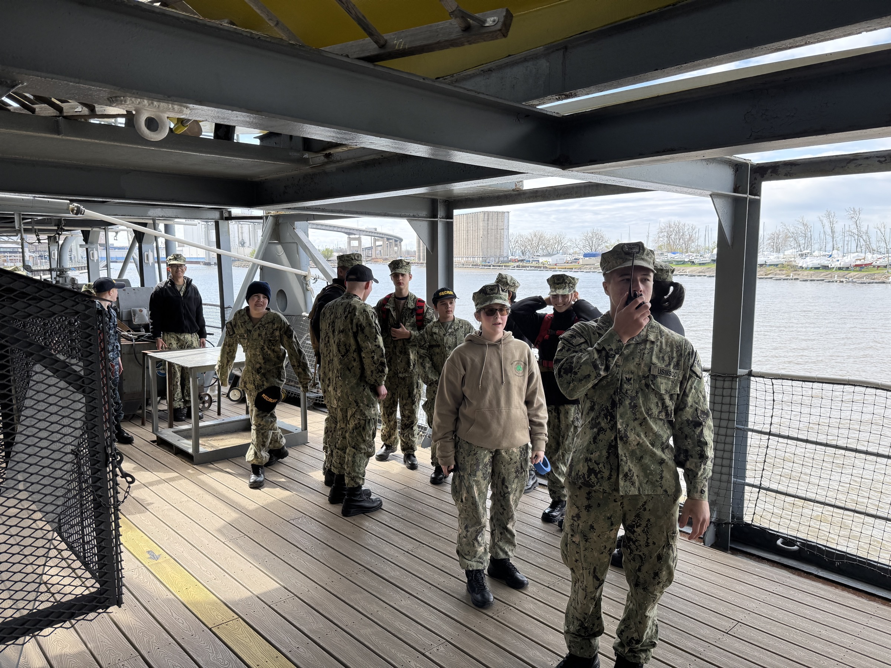

Resource Hub
Find what you need. Get back to the mission.
The old Cadet page becomes a practical hub for cadets, parents, and staff. Current information comes first; outdated notices stay out of the way.

Enrollment and expectations
Forms, contact paths, payments, and first-drill guidance.
Internal references
Future protected documents, links, and unit communication.
JSCTC Buffalo
Schedules, course descriptions, reporting instructions, and training updates.